Central African Republic
 |
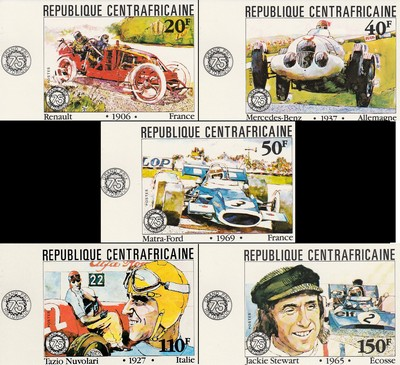 Issue date: 1981 A set of 5 stamps commemorating the 75th anniversary of the French Grand Prix. In 1965, the French Grand Prix was held at Clermont-Ferrand on June 27th. Jackie Stewart came second in a BRM P261. In 1969, the French Grand Prix was held at the Charade Circuit on July 6th. The Matra-Ford dominated the race, providing a 1-2 finish (Jackie Stewart and Jean-Pierre Beltoise). 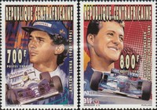 Issue date: 1996 A pair of stamps featuring two of the greats: - Ayrton Senna - Michael Schumacher 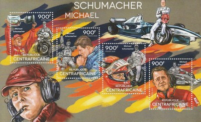 Issue date: 2014 A mini sheet featuring Michael Schumacher. On 29th December 2013 Schumacher suffered a severe head injury in a skiing accident. His precise condition is being kept private by the family, but it is extremely serious suggesting that he is paralysed, cannot speak and has memory problems. 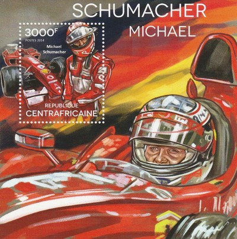 Issue date: 2014 A mini sheet featuring Michael Schumacher. On 29th December 2013 Schumacher suffered a severe head injury in a skiing accident. His precise condition is being kept private by the family, but it is extremely serious suggesting that he is paralysed, cannot speak and has memory problems.  Issue date: 2015 A commemorative sheet featuring Lewis Hamilton. In 2015, Hamilton became a triple world champion as the Mercedes team continued to dominate F1. Hamilton secured the title at the United States Grand Prix with three races left to run. Hamilton joins the likes of Juan Manuel Fangio, Jack Brabham, Jackie Stewart, Niki Lauda, Nelson Piquet, Alain Prost, Ayrton Senna, Sebastian Vettel and Michael Schumacher who have all won the world championship three or more times.  Issue date: 2016 A mini sheet featuring Ayrton Senna and the McLaren MP4/5B - in 1990 Senna drove this car to his second World Championship. At the penultimate round of the championship in Japan, where Senna and Prost collided the previous year, Senna took pole ahead of Prost - with nine points separating the two drivers. Before qualifying, Senna had sought assurances from the organisers to move pole position left onto the clean side of the racetrack. After qualifying, FIA president Balestre denied Senna's request, leaving Senna to start on the dirty right side, thus favouring Prost on the left. In addition, as revealed by F1 journalist Maurice Hamilton, the FIA had warned that crossing the yellow line of the pit exit on the right to better position oneself at the first corner would have not been appropriate, further infuriating Senna. At the beginning of the race, Prost pulled ahead of Senna, who immediately tried to repass Prost at the first corner. While Prost turned in, Senna kept his foot on the accelerator and the cars collided at 170 mph and spun out of the race, making Senna world champion. 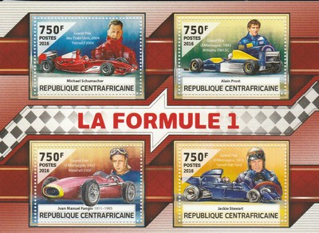 Issue date: 2016 A mini sheet of four values featuring: - Michael Schumacher and the Ferrari F2004, the car in which he achieved his seventh World Championship - Alain Prost and the Williams FW15C, the car in which he achieved his fourth World Championship - Juan Manuel Fangio and the Maserati 250F, the car in which he achieved his fifth World Championship - Jackie Stewart and the Tyrrell 006, the car in which he achieved his third World Championship 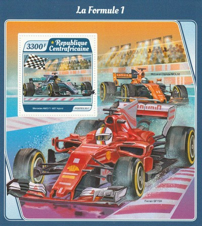 Issue date: 21st August 2017 A mini sheet of one value featurning the following F1 cars: - Mercedes F1 W07 Hybrid - driven in 2016 by Lewis Hamilton and Nico Rosberg - this hugely successful car delivered the Constructors' Championship for Mercedes and the Drivers' Title for Rosberg. - McLaren MCL32 - driven in 2017 by by two-time World Drivers' Champion Fernando Alonso, who stayed with the team for a third season; and Stoffel Vandoorne, who joined the team after Jenson Button retired from full-time competition at the end of the 2016 season. Originally known as the MP4-32, MCL32 was introduced following CEO Ron Dennis's departure from the team's parent company, the McLaren Technology Group, in November 2016. - Ferrari SF70H - driven in 2017 by Sebastian Vettel and Kimi Raikkonen, named the SF70H because of the Scuderia Ferrari's 70th anniversary. 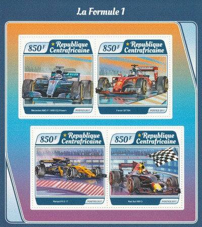 Issue date: 21st August 2017 A mini sheet of four values featurning the following F1 cars: - Mercedes AMG F1 W08 EQ Power+ - driven in 2017 by three-time World Drivers' Champion Lewis Hamilton, who remained with the team for a fifth season, and Valtteri Bottas, who joined the team after 2016 World Champion Nico Rosberg's retirement from the sport. - - Ferrari SF70H - driven in 2017 by Sebastian Vettel and Kimi Raikkonen, named the SF70H because of the Scuderia Ferrari's 70th anniversary. - Renault R.S.17 - driven in 2017 by Nico Hulkenberg and Jolyon Palmer. - Red Bull RB13 - driven in 2017 by Daniel Ricciardo and Max Verstappen. 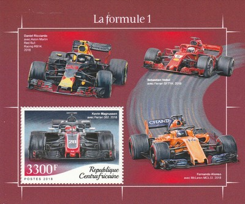 Issue date: 20th September 2018 A mini sheet of one value featuring the following cars and drivers from the 2018 season: - Red Bull RB14 and Daniel Ricciardo - Ferrari SF71H and Sebastian Vettel - Haas VF-16 and Kevin Magnussen - McLaren MCL33 and Fernando Alonso 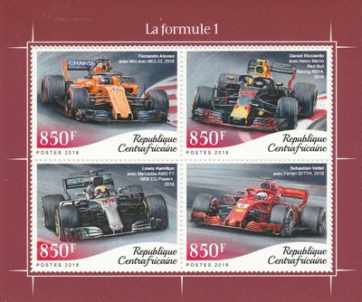 Issue date: 20th September 2018 A mini sheet of four values featuring the following cars and drivers from the 2018 season: - McLaren MCL33 and Fernando Alonso - Red Bull RB14 and Daniel Ricciardo - Mercedes AMG F1 W09 EQ Powerplus and Lewis Hamilton - Ferrari SF71H and Sebastian Vettel 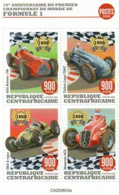 Issue date: 30th November 2020 TBD 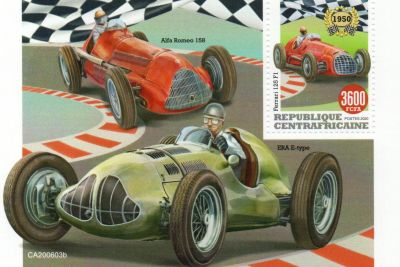 Issue date: 30th November 2020 TBD |